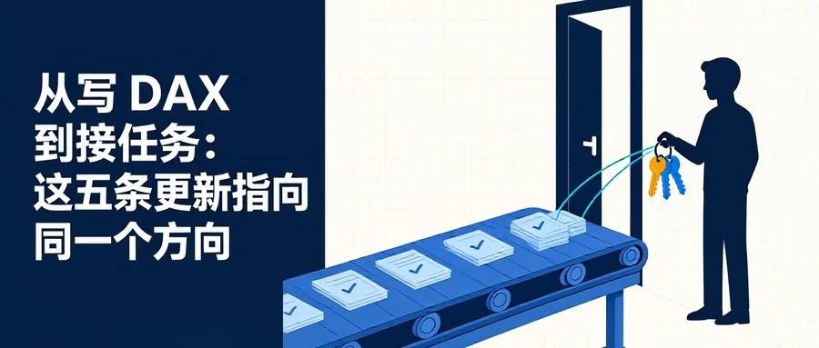
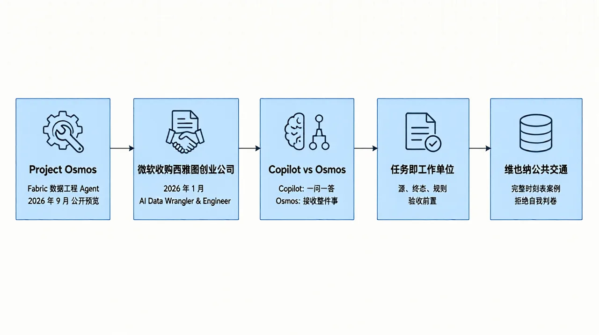
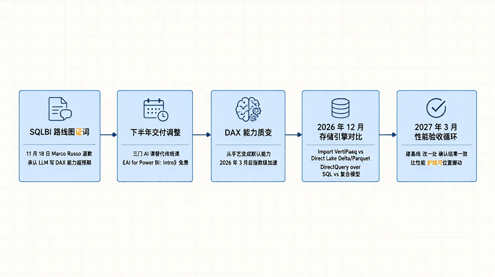
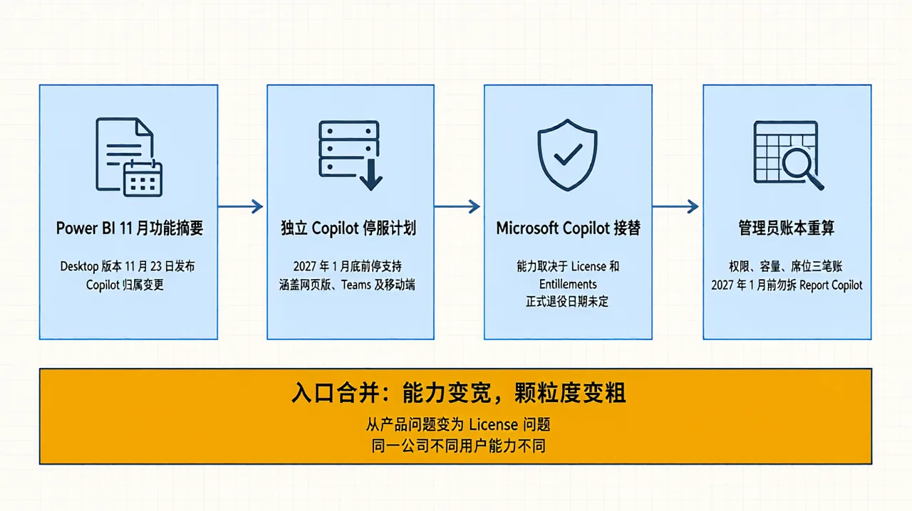
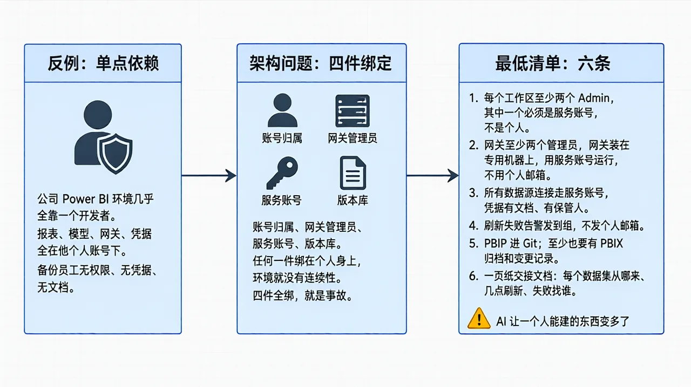

从写 DAX 到接任务：这五条更新指向同一个方向
这周五条更新指向同一件事：AI 开始接任务。Osmos 替人做完整项目，SQLBI 把重心移到验收，Copilot 合并入口。生产变便宜了，交接没有。

AI 已经不满足于写代码了。它开始接任务。
这周的五条素材，来自四个方向。Data Mozart 写了 Project Osmos：你把整个项目交给它，它自己规划、写 notebook、跑、对照规则验收，关掉电脑还在跑。Power BI 11 月功能摘要里，Copilot 要向没有 Copilot Premium license 的用户开放，独立的 Power BI Copilot 计划在 2027 年 1 月底前停支持。SQLBI 说，LLM 写 DAX 快得超出预期，他们不得不调整下半年的内容路线。SQLBI 还顺手用 AI 做了一个完整的白板应用，两个人，一个八月假期。最后一条来自 Reddit：一家公司的 Power BI 环境，全部挂在一个人身上。
前四条在说，做出来的成本在降。第五条在说，接住的成本没降。合在一起，是这周真正值得记的一句话：AI 接的是任务，组织还没有准备好接任务的人。
一、Project Osmos：任务成了工作单位
先看最彻底的一条。
Project Osmos 是 Fabric 的数据工程 agent，2026 年 9 月 FabCon Europe 在巴塞罗那宣布公开预览。它来自微软 2026 年 1 月收购的西雅图创业公司。收购前，这家公司有两个原生 Fabric 工作负载：AI Data Wrangler 处理乱七八糟的外部文件，AI Data Engineer 生成生产级 PySpark。预览版是后者长大之后的样子。
用法和现在的 AI 助手都不一样。Copilot 是一问一答：你要一段转换，它写 PySpark，你跑，报错，你把错误贴回去，再来一遍。Osmos 收的是整件事：这是源，这是终态，这是必须遵守的规则，这是怎么算验收通过。它在 Fabric 的 Spark 上规划、写 notebook、运行、对照规则检查、修不对的地方。原文说，关掉笔记本它还在跑。
Data Mozart 的比喻很准：Copilot 是坐你旁边、提醒下一行怎么写的同事；Osmos 是周一早上拿走工单、回来时带着 notebook、Delta 表和数字对得上的证据的同事。
作者没有拿 AdventureWorks 试。他用了维也纳公共交通的完整时刻表，把 Osmos 提的设置、他推翻的地方、以及怎么检查它而不让它自己给自己判卷，全写了出来。
我的看法：这条最值得记的不是 agent 有多强，是原文里那句话——task is the unit of work。任务成了工作单位。
单位一变，验收就得前置。你交给它一个任务之前，必须先把「什么算完成」「什么算对」写成规则。写不出规则，你连它做没做完都判断不了。这和做项目的第一条方法论是一回事：先问清楚要做什么决定。只不过以前问的是人，现在问的是 agent。

二、SQLBI 的路线图，是一份证词
第二条来自 SQLBI。
Marco Russo 在 11 月 18 日的文章里道歉：SQLBI+ 下半年没交付多少内容，计划中的课程延后几个月，不取消。原因写得很直接：LLM 写 DAX 的能力比他们预期快得多，2026 年 3 月之后是指数级加速。所以下半年他们改做了三门 AI 课——《AI for Power BI: Intro》免费，《DAX with AI: Essentials》和《DAX with AI: Scenarios》。
这句话的分量，比任何 benchmark 都重。一个靠教 DAX 吃饭的团队，用自己的排期承认：写 DAX 这件事，正在从手艺变成默认能力。
路线图也值得看。2026 年 12 月，对比语义模型的存储引擎：Import 的 VertiPaq、Direct Lake 的 Delta/Parquet、DirectQuery over SQL，还有复合模型，比性能和成本。2027 年 2 月，《Inside Relationships in Semantic Models》，讲关系类型和性能影响。2027 年 3 月，《Using AI Tools to Optimize DAX》，用 Power BI Modeling MCP Server 测查询性能。2027 年 4 月，时间智能。
注意 3 月那门课的循环：建基线，改一处，确认结果一致，比性能。四步。Osmos 验收一个项目，用的也是这个形状。
我的看法：这不是「SQLBI 转行了」，是护城河挪了位置。
他们没有取消任何一门传统课，只是挪后。挪后的是「怎么写」，提前的是「怎么验收、怎么调性能、怎么建模」。如果你的团队还拿「谁会写 CALCULATE」当护城河，这条河正在见底。真正还在涨水位的是两件事：读得懂 AI 写出来的东西，和知道性能花在哪里。前者是验收，后者是工程。数据接入和建模上的同类拆解，博客里还有几篇。

三、Copilot 换入口：能力变宽，颗粒度变粗
第三条是 Power BI 11 月功能摘要。
Desktop 版本会在 11 月 23 日那一周之后发布。这一期最重要的一条不是新控件，是 Copilot 的归属：微软要把 Copilot 扩展到没有 Copilot Premium license 的用户；独立的 Power BI Copilot 计划在 2027 年 1 月底前停支持，范围包括网页版（含 Home）、Teams 和 Power BI 移动端。接替它的是 Microsoft Copilot，每个用户能用哪些能力，取决于自己的 license 和 entitlements。
原文也写明了：正式的退役日期还没公布，细节会另行通知。所以 2027 年 1 月是计划，不是承诺。
其余更新集中在 org apps、报表可视化、数据连接和语义模型部署。对普通制作者来说，这些是加分项；对管理员来说，真正要重算的是账。
我的看法：入口合并，能力就更宽，但颗粒度更粗。
以前「有没有 Copilot」是一个产品问题，勾选就行。现在它变成了 license 问题：同一个公司里，不同的人打开同一个报表，Copilot 能做的事可能不一样。权限、容量、席位，三笔账要一起算。普通用户确实受益，不用再加一个 Premium 席位就能碰到 Copilot。管理员要多做一件事：把「谁有什么」写成表。这又回到了验收——你得先定义清楚，才能判断它有没有做到。
一条建议：2027 年 1 月之前，别急着拆现有的 Report Copilot。等官方日期出来再迁。迁移本身不难，难的是迁完之后，谁负责解释「为什么这个人有、那个人没有」。

四、两个人，一个假期，一个完整应用
第四条看起来最不像新闻。
微软在 2026 年 10 月 16 日退役了独立的 Microsoft Whiteboard 应用。网页版只对工作账号开放，个人账号完全用不了。个人账号在 10 月 16 日前没导出的白板，被永久删除；工作账号还能从 OneDrive 导出。
SQLBI 每天用白板录课。退役公告正好撞上他们录《DAX with AI》的课。于是八月，Alberto 和 Marco 自己写了一个：SQLBI Whiteboard。免费，开源，Windows 桌面，不需要账号，不需要租户，白板存在本机。
细节都很实在。可以从 Microsoft Store 装，也可以一行命令：winget install SQLBI.Whiteboard。导出的 ZIP 用 File → Open 打开，墨迹、便签、形状、文字都在；存成 .wboard 继续编辑。支持笔、触摸、鼠标，导出 PDF 和 PPTX。LiveView 能把另一个正在运行、甚至被别的窗口挡住的程序，实时显示在白板里，直接在上面画。
我的看法：这条真正的信息在最后一句。两个人，一个意大利的八月假期，做出一个完整应用。原文说，这是另一篇关于「用 AI 做软件」的长故事。
AI 把「交付一个完整产品」的单位，从团队降到了个人。这正是下一条要问的问题的反面：一个人能建的东西越多，他离开时留下的洞就越大。
五、反例：一个公司，一个开发者
第五条来自 Reddit 的 r/PowerBI，评分只有 3.9，C 类。但它是这五条里最该给老板看的一条。
提问的人说，公司的 Power BI 环境几乎全靠一个开发者。报表和工作区在他的账号下，语义模型和数据源连接是他配的，定时刷新依赖他管的凭据，本地/虚拟网关用他的员工邮箱安装和管理，网关管理员权限基本在他手里。公司指定的备份员工，没有权限，没有凭据，也没有文档。
他问的是：在这个人离开之前，该向他要什么、向 IT 要什么。列了七个方向：工作区角色和管理权限、网关管理员怎么设、SQL Server 和 ERP 这些源系统的访问、服务账号和刷新凭据怎么管、PBIX/PBIP 原始文件和文档、刷新失败能不能自己排、有没有版本库和部署流水线。
我的看法：这不是人事问题，是架构问题。
账号归属、网关管理员、服务账号、版本库。这四件事，任何一件绑在个人身上，环境就没有连续性。四件全绑，就是这次提问里的样子。我之前做的 FinOps 看板，27 个业务单元、28 个 RLS 角色。这种规模的环境，交接文档写不出十页，就是事故。
我给的最低清单是六条：
- 每个工作区至少两个 Admin，其中一个必须是服务账号，不是个人。
- 网关至少两个管理员，网关装在专用机器上，用服务账号运行，不用个人邮箱。
- 所有数据源连接走服务账号，凭据有文档、有保管人。
- 刷新失败告警发到组，不发个人邮箱。
- PBIP 进 Git；至少也要有 PBIX 归档和变更记录。
- 一页纸交接文档：每个数据集从哪来、几点刷新、失败找谁。
六条都不新。新的是：AI 让一个人能建的东西变多了，这六条变得更容易被跳过。建得越快，越没人问「这些建在谁的账号下」。

五条放在一起看
前四条是同一条曲线的四个点。
Osmos 把工作的单位从「一次生成」推到「一个任务」。SQLBI 把课程的重心从「怎么写」挪到「怎么验收、怎么调性能」。Copilot 把入口从产品按钮合并成 license 能力。Whiteboard 把「交付一个完整产品」的门槛从团队降到两个人。四个点指向同一件事：生产的边际成本在掉。
第五条是曲线的另一面：接收的边际成本没掉。
任务这个词，在两端是完全不同的东西。在 Osmos 那边，任务有输入、有规则、有验收证据，所以可以交给 agent。在 Reddit 那边，整个环境是一个没有定义、没有规则、没有证据的任务，所以只能压在一个人身上。同一个词，一端是 agent 的输入，一端是人的负债。
时间上也有一条线。微软 1 月收购 Osmos 的团队，3 月之后 LLM 写 DAX 加速，9 月 Osmos 公开预览，10 月微软退役自己的 Whiteboard，11 月 Copilot 合并入口。这是原文给的事实，不要过度解读成因果。
四条同向，第五条给出代价。合起来能推出一个单条得不出的结论：AI 提高单人产能，也提高单点风险，因为它们是同一个变量——一个人能覆盖的范围。范围越大，没有备份的那个人越贵。
我的判断
值得跟。现在动手，但顺序不是先上工具，是先写验收。
必学：把每件交给 AI 的事，写成可验收的任务——输入、规则、验收证据。这是 Osmos 这个词背后，唯一能直接搬进你自己工作流的东西。写不出验收规则，就别把事交出去。
可选：Microsoft Copilot。先看 license 和 entitlements，2027 年 1 月是计划不是承诺，现有的 Report Copilot 先别拆。SQLBI 12 月的存储引擎对比值得等，选模型时用得上。
观望：Project Osmos。公开预览，一个真实数据集能证明方向，证明不了稳定性。SQLBI 2027 年的三门课也一样，上完再看值不值。
现在就得改：别把整个环境留在个人账号下。这不在观望名单里。网关、服务账号、工作区管理员、版本库，四件事先做两件，也比不做强。这类治理和交接属于服务范围，手上公开的看板在案例里能看到权限是怎么分层的，具体的可以直接从联系页找我。
AI 把「做得出来」变成了默认值。接下来值钱的，是「接得住」。